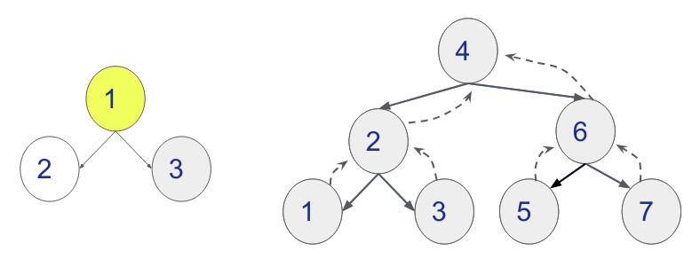
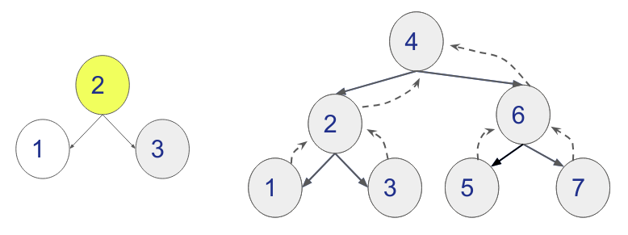
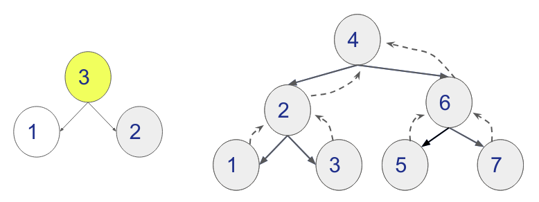

Disciplinas
-
ESTRUTURA DE DADOS-T01-2024-1 Concluído
Materiais
Vídeo 1 - [UFMS Digital] Estrutura de Dados - Módulo 2 - Unidade 2. sendProf° ministrante: Dr. Jonathan de Andrade Silva.
Conteúdo
Árvore Binária de Busca.
Algoritmo de percurso e algoritmo de remoção.Árvore Binária (Remoção).
- Diferentemente da inserção, a remoção exige retirar um nó em qualquer posição da árvore.
- Esse processo interfere nas propriedades da árvore.
- Temos que resolver com o menor impacto na árvore.
- Por exemplo, retirar o nó 7.
- Temos 2 situações de remoção de um nó:
- Nó folha: o nó contendo 0 filhos, basta retirar o nó da ligação com seu ancestral;
- Nó interno, temos dois tipos:
- Nó com 1 filho: há uma sub-árvore conectada ao nó a ser removido na esquerda ou na direita;
- Nó com 2 filhos: há duas sub-árvores conectadas ao nó a ser removido na esquerda e na direita.
- Temos as situações de remoção de nó: o nó contendo 0, 1 e 2 filhos, com a remoção de 5, 12 e 7 respectivamente.
- A remoção do caso com 2 filhos pode ser feita:
- Substituindo o valor do nó que se deseja remover por algum outro mais próximo.
- Ideia: se colocar um valor “parecido” não vai interferir na organização dos filhos e ainda mantém a propriedade da árvore binária.
- Quem seria o mais parecido com 7?
- temos o 5 (antecessor) e o 9 (sucessor).
- Antecessor do nó 7 é o 5:
- é o menor valor mais próximo do nó 7.
- Sucessor do nó 7 é o 9:
- é o maior valor mais próximo do nó 7.
- Antecessor (🟡) de um nó R:
- está mais à direita na sub-árvore esquerda de R;
- Sucessor (🟠) de um nó R:
- está mais à esquerda na sub-árvore direita de R;
- Podemos substituir o nó por qualquer um desses.
- Qual é o mais rápido de achar?
- Antecessor com h-1 passos.
- E se o antecessor ou sucessor tiverem filhos?
- Não dá pra remover o nó sucessor ou antecessor após a troca com o nó a ser removido.
- E se executar o procedimento de remoção no nó que está no local do sucessor ou antecessor?
- E se o antecessor ou sucessor tiverem filhos?
- Queremos remover R que tem sucessor S;
- Esse sucessor S tem filho Z.
- Se trocar R com S e remover S, vamos perder toda subárvore de Z.
- E se o antecessor ou sucessor tiverem filhos?
- E se aplicar a remoção agora onde está o R?
- Verificar os 3 casos.
- Nó folha?
- Nó com 1 filho?
- Nó com 2 filhos?

- E se o antecessor ou sucessor tiverem filhos?
- E se aplicar a remoção agora onde está o R?
- Temos o caso de remover nó com 1 filho.
- Ancestral de R conecta-se com Z.
- Para remover um nó temos que:
- Encontrar o nó a ser removido (h1);
- Verificar quantos filhos o nó tem:
- Se tiver 0 filhos o ancestral se desconecta;
- Se tiver 1 filho o ancestral conecta com esse filho;
- Se tiver 2 filhos, encontrar o seu sucessor ou antecessor (h2);
- Trocar de valor entre os nós e repetir a remoção até remover o nó.
- Esse custo médio pode envolver percorrer toda a altura da árvore (h = h1+h2), custo O(log2 N), se a árvore for não degenerada.
Árvore Binária (Percurso).
- Para poder imprimir ou visitar os nós na árvore binária podemos fazer o processo similar à busca, visto na unidade anterior.
- A ordem de visitação poderia ser de 3 possíveis maneiras:
- Pré-Ordem
- Em-Ordem
- Pós-Ordem
No percurso Pré-Ordem vamos visitar 1° a raiz, 2° o filho esquerdo e 3° o filho direito.
- preOrdem(no):
- Se no não vazio então:
- visita no;
- preOrdem(no.fe);
- preOrdem(no.fd).
No percurso Em-Ordem vamos visitar 1° o filho esquerdo, 2° o nó raiz e 3° o filho direito.
- emOrdem(no):
- Se no não vazio então:
- emOrdem(no.fe);
- visita no;
- emOrdem(no.fd).
No percurso Pós-Ordem vamos visitar 1° o filho esquerdo, 2° o filho direito e 3° o nó raiz.
- posOrdem(no):
- Se no não vazio então:
- posOrdem(no.fe);
- posOrdem(no.fd).
- visita no;
- Para poder imprimir ou visitar os nós na árvore binária podemos fazer o processo similar à busca, visto na unidade anterior. Vamos ver no VISUALGO(https://visualgo.net/en/bst?slide=1).
- A ordem de visitação poderia ser:
- Em-Ordem:
- [1,2,3,4,5,6,7]
- Pré-Ordem:
- [4,2,1,3,6,5,7]
- Pós-Ordem:
- [1,3,2,5,7,6,4]
Árvore Binária (Análise).
- O número de nós de uma árvore com M níveis é 2M-1.
- Qual seria a altura h de uma árvore com N nós?
- h = M-1.

- Qual seria a altura h de uma árvore com N nós?
- altura(M-1) -> 2M-1 nós;
- Vamos considerar que temos X níveis nessa árvore com N nós.
- altura(X-1) -> N nós;
- altura(X-1) -> 2X -1 nós;
- N = 2X -1.
- Qual seria a altura h de uma árvore com N nós?
- N = 2X-1.
- N+1 = 2X.
- Vamos isolar a variável X de 2X.
- log2(N+1) = log2(2X);
- log2(N+1) = X.
- h = X-1; h = log2(N+1)-1
- Vamos testar com N=15 nós, qual seria a altura (h)?
- h = log2(N+1)-1;
- h = log2(15+1)-1;
- h = log2(16)-1;
- h = 4-1;
- h = 3.
Referências
- CORMEN, Thomas. Algoritmos: teoria e prática. Rio de Janeiro: GEN LTC, 2013. ISBN 9788595158092. Disponível na Biblioteca Digital da UFMS.
- SZWARCFITER, Jayme Luiz; MARKENZON, Lilian. Estruturas de dados e seus algoritmos. 3. ed. Rio de Janeiro, RJ: LTC, 2010. ISBN 9788521629955. Disponível na Biblioteca Digital da UFMS.